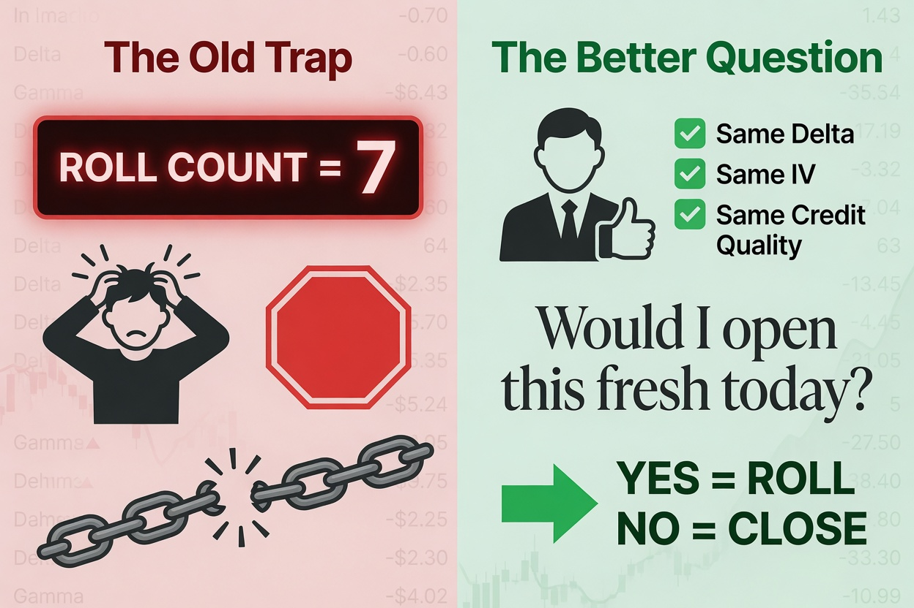
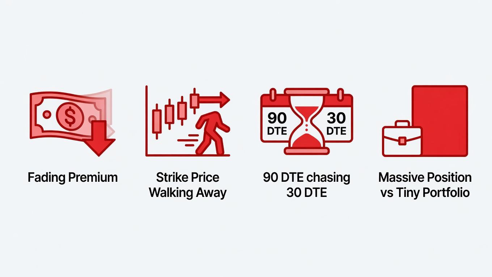

Picture a trader on a Friday afternoon. She is short a cash-secured put she has now rolled six times. The stock wobbled, she rolled down and out, collected credit, did it again, and again. The position is green. The next roll in front of her is clean: a real net credit, a strike she likes, more time. Every number says do it.
And then a voice in her head, picked up from a trading book or a mentor or some half-remembered desk wisdom, says: you have rolled this six times. That is the limit. Close it. Take the assignment. Move on.
So she closes a perfectly good position. She crosses a fresh spread, pays the commissions, and rebuilds her exposure from scratch; not because the next trade is better, but because a counter told her this one had used up its allowance.
I am not writing this from a hunch alone. While I build OTS Ullu from the ground up, I am taking the time to validate each theory and assumption currently in practice, and along the way its engine has watched over thousands of these exact decisions, day after day, across dozens of underlyings and many broker accounts, through hundreds of trading days of live activity. And through all of that volume, one conviction has held from the very first trade. A counter should never be the thing that ends a trade. Five rolls, ten, a hundred; the number was never the point. The trade is the point. If the next roll earns its place, you make it. If it does not, you do not. The roll count gets no vote.
This article is the case for that conviction, made carefully, because the rule I am arguing against is not a careless one. It is the opposite: excellent engineering for a problem most of us do not have.
Where the rule comes from, and why I respect it
The "cap your rolls at four to six" rule lives on professional desks for real reasons. I spent a long time tracing them, through structured debate across several AI systems and against my own trading record, because I wanted to be sure I was not dismissing something I simply did not understand. Here is what I found. The cap is not really about the trade at all. It is a stand-in for constraints that have nothing to do with whether the next roll is good.
A fund has a mandate. Its prospectus authorized a certain kind of exposure: a duration, a size, a concentration. Roll a short put far enough and it quietly becomes a longer-dated position than anyone signed off on. The cap is a fence around the paperwork.
A fund has investors and auditors. A position rolled deep underwater shows an ugly mark every quarter, and rolling to avoid booking the loss is exactly the behavior that earns a manager a hard conversation with the people whose money it is. The cap forces the loss into daylight, where stewardship of other people's money demands it live.
A fund has margin that punishes age. Under portfolio margining, a position moving against you eats more capital as it deteriorates, so its real return quietly rots on the firm's books in a way you would never see in a cash-secured account.
And a desk has too many positions and too few people. Nobody can re-examine four thousand aging chains by hand. A hard number is a forcing function; it drags scarce senior attention to the trades that have earned a second look.
Every one of those is sound. If I ran a desk, I would cap rolls too. A bright-line number is fast, defensible, and auditable; and at institutional scale, judgment does not scale, but a counter does.
Here is the thing, though. Look at that list again. Mandate. Auditors. Margin decay. Attention budget. Now hold it up against an individual managing their own book.
None of it is yours.
You have no prospectus to breach. No limited partner reading your marks. If your puts are genuinely cash-secured, your capital charge does not creep as the position ages; the cash is the cash. And you are already the human in the loop; nobody needs a counter to make you look at your own positions, because looking at your own positions is the entire job. The cap was built to solve four problems you do not have. Inheriting it anyway is like installing a smoke detector built for a commercial kitchen in a house with no stove.
The one question that should actually decide
If a number should not end a trade, what should? Strip away all the institutional machinery and the cap was always reaching, clumsily, for a single question; the same one I built into the core of how OTS Ullu thinks.
Would I open this exact position, fresh, today?

The one question that should actually decide.
Same underlying. Same strike. Same delta. Same implied volatility. If I were sitting on cash right now, would I put this trade on?
If the answer is yes, then rolling and starting fresh are the same trade economically, except that rolling is cheaper. No new spread to cross, no extra commissions, no break in the thesis. The capital goes to work either way; rolling simply gets it there without paying the toll twice.
If the answer is no, the roll is a loss you are refusing to look at, wearing the costume of a good trade. And here is the trap that catches careful people: every advantage you can point to (the credit you collected, the better strike, the extra time) is measured against the position you are stuck in, not against everything else you could do with that money. A roll can look like a win on every one of those and still be a position you would never choose if you were starting clean. The honest comparison is not "is this roll positive?" It is "is this roll better than the best thing I could do with the same capital?" A roll earning 8% a year, while fresh trades on your platform average 15%, fails that test no matter how many green checkmarks it collects.
Notice what that question never asks: how many times have I rolled this already? It does not care. A position can fail it on roll two. It can sail through on roll twenty-five.
And this matters: none of this is a license to roll forever. It is the reverse. The counter says "stop at six, no matter how good the trade." My test says "justify every single roll against the standard you would hold fresh capital to, every time." That is harder than counting. It simply stops trades on their merits instead of on a tally. Removing an arbitrary ceiling is not the same as endorsing endless repair, and anyone who hears "roll as much as you want" has heard the opposite of what I am saying.
This is not a puts thing; it is a short-premium thing
I keep saying "put" because that is the trader in our story, but make no mistake: everything here applies just as fully to the other great short-premium income trade, the short covered call. Both are positions where you sell the option, collect the premium up front, and roll to keep collecting it. The cash-secured put and the covered call are simply the two directions of the same discipline.
Sold a call against your stock, watched the stock rip up toward your strike, rolled up and out for a credit to keep your shares? Same logic, mirror image. A short covered call rolled forty times is fine if every one of those forty rolls would pass the "open it fresh today?" test; if you would happily sell that call, at that strike, against that stock, right now. The day a roll-up means chasing a runaway stock and capping it below where you would ever willingly sell, that is the day to stop. Not the day a counter says so.
Puts roll down to chase a falling stock. Calls roll up to chase a rising one. Different direction, identical sin: pretending a position you would never open is worth keeping because you are already in it. The number of prior rolls tells you nothing about which case you are in. The merits tell you everything.
What actually says stop

Real signals that tell you it's time to stop.
So the counter is out. But real stop signals do exist, and they are worth more than a number because they read the trade, not the tally. The catch is that they live at the level of the whole rolled chain, not the single roll in front of you, which is exactly why a one-roll-at-a-time gate cannot see them coming. Four are worth watching:
- The credit is drying up. Each roll brings in less than the last: $1.80, then $0.90, then $0.30, then a dime. At some point you are not harvesting premium anymore; you are rolling for free just to avoid booking a loss. The income was an illusion two rolls ago.
- The strike is walking away from you. This is the quiet killer, because it hides behind a passing trade. To roll a put down on a falling stock, you buy back your old put at a fat loss, since it ballooned as the stock dropped, and sell a lower one further out. After a sharp enough drop, that can still net a small credit, so the trade "passes." But you have locked in the loss and chased the stock down to collect pennies. That is not income. That is catching a falling knife with a smile on your face.
- Time is getting expensive. When you have to go ninety days out to scrape what thirty days used to pay, your decay per day is collapsing. The "premium" has become an interest rate you are charging yourself to avoid the truth.
- One position is eating the book. A roll can be flawless on its own and still be a mistake, because defending one ticker has quietly grown it into a quarter of your buying power. A great trade can be a terrible portfolio.
Put those together and a dying position is obvious without ever counting a thing. The credit fades, the strike drifts from comfortably out-of-the-money to underwater, each roll begs for more time; that is a stop signal, and it might fire on roll three of a crash or never on roll thirty of a calm market. A counter would have flagged the calm one and waved the crash right through. The trajectory gets it right. The counter gets it backwards.
When the counter is the right tool, yes, really
I would be breaking my own rule (judge the situation, not the slogan) if I told you to throw the cap away everywhere. So, plainly: if you manage pooled money under a mandate, if you answer to limited partners or auditors, if your margin degrades as positions age, or if you run a delegated or fully automated account where no human reviews each chain, keep the cap. In those worlds the per-trade judgment I am describing is a luxury you cannot scale, and a bright line is the responsible choice. The cap is not wrong. It is simply built for a room you may not be standing in.
The whole argument, in one sentence: match the rule to your own constraints, not to someone else's.
Why I am telling you this
I am building OTS Ullu because I want individual investors to have the systematic discipline of an institutional desk without inheriting the cage that desk lives in. The day-one conviction, that merit ends a trade and a counter never does, is built into how the engine evaluates every roll, for puts and calls alike. It does not ask how many times you have been here. It asks whether you would choose to be here now.
But I would rather start an argument than win one quietly. If you have built roll or assignment logic on a real desk, or taught it, or lived inside the mandates and margin math I have only studied from the outside, push on this. Tell me where it holds and where it breaks. The institutions got the engineering right for their world. I am trying to get it right for a different one, and the sharpest critics are usually the people who solved the original problem first.
So, where am I wrong? That is the most useful thing you could tell me.
Sam Vishwas, Founder, OTS Ullu. Wisdom-Driven Investing for Long-Term Wealth

Educational, not investment advice. Short options carry real risk, including assignment and loss. Judge any approach against your own situation, or with a licensed advisor.